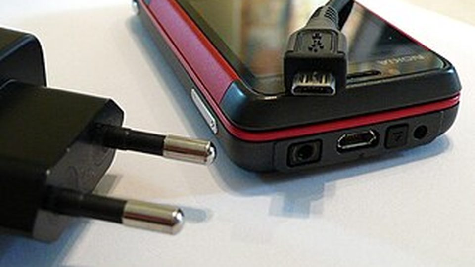

Batterie externe et station électrique : comprendre mAh et Wh
Une batterie externe stocke de l’énergie pour recharger un téléphone ou une radio. Les mAh indiquent une quantité de charge, les Wh une quantité d’énergie. Pour comparer deux modèles, regardez les Wh. Pour la sécurité, évitez la surchauffe et surveillez tout gonflement.

mAh et Wh : la différence qui compte
Le mAh (milliampère-heure) mesure la charge électrique. Le Wh (watt-heure) mesure l’énergie réellement disponible. La conversion est simple : Wh = (mAh × V) / 1 000. Par exemple, une batterie de 10 000 mAh sous 3,7 V fournit environ 37 Wh.
Deux batteries de même mAh peuvent avoir des Wh différents si leur tension interne diffère. Pour savoir combien de fois vous pourrez recharger un appareil, utilisez les Wh et l’efficacité de conversion, toujours inférieure à 100 %.
Sécurité : les signes d’alerte à connaître
Les batteries lithium-ion peuvent, en cas de défaut ou de mauvaise utilisation, chauffer de façon incontrôlée. Un gonflement du boîtier, une chaleur anormale au toucher ou une odeur suspecte imposent l’arrêt immédiat de la charge et de l’utilisation.
- Ne chargez pas une batterie sans surveillance.
- Ne l’exposez pas au soleil ni à une source de chaleur.
- Ne la laissez pas en charge toute la nuit sur un lit ou un canapé.
- Utilisez le câble et le chargeur prévus par le fabricant.
- En cas de gonflement, placez-la à l’écart, sur une surface non inflammable, et rapportez-la en point de collecte.
Quelle capacité pour un kit 72 h ?
Pour recharger un téléphone deux à trois fois, une batterie de 10 000 mAh (environ 37 Wh) suffit souvent. Une station électrique portable de 200 à 300 Wh peut alimenter un petit appareil médical ou recharger plusieurs appareils, mais elle est plus lourde et plus chère.
La réglementation aérienne limite les batteries en cabine à 100 Wh, sauf autorisation de la compagnie. Cette limite est un repère utile pour la taille et le poids. Au-delà, la batterie devient difficile à transporter et à stocker en sécurité dans un logement.
Informations pratiques, sources officielles (Réglementation aérienne (limite de 100 Wh), conseils de sécurité des batteries lithium-ion). Elles ne remplacent pas les consignes des autorités. En cas d'urgence, appelez le 112 et suivez les consignes de la préfecture, de la radio et de FR-Alert.
Questions fréquentes
Puis-je recharger ma batterie externe avec un panneau solaire ?
Oui, si le panneau fournit une tension et une puissance compatibles. La charge sera lente et dépendra de l’ensoleillement. Vérifiez les caractéristiques techniques avant d’acheter.
Une batterie gonflée peut-elle exploser ?
Elle présente un risque d’incendie et d’emballement thermique. Ne la percez pas, ne la comprimez pas et ne la rechargez plus. Rapportez-la en déchetterie ou en point de collecte adapté.
Les Wh sont-ils toujours indiqués ?
Pas toujours. Si seule la capacité en mAh est indiquée, demandez la tension (V) pour calculer les Wh. En l’absence de Wh, la méfiance est de mise pour un usage aérien.
Combien de temps une batterie externe se conserve-t-elle ?
La capacité diminue avec le temps et les cycles de charge. Une batterie lithium-ion perd quelques pour cent par an même si elle n’est pas utilisée. Vérifiez sa charge tous les six mois.
Puis-je laisser une batterie externe dans la voiture ?
Non. Les températures très élevées ou très basses dans un véhicule accélèrent le vieillissement de la batterie et peuvent augmenter les risques. Rangez-la à l’abri de la chaleur, du gel et de l’humidité.
Une station électrique peut-elle alimenter un appareil médical ?
Certaines stations sont conçues pour les appareils médicaux, mais toutes ne délivrent pas une onde pure. Vérifiez la compatibilité avec le fabricant de l’appareil avant de compter dessus en situation d’urgence.
À lire aussi